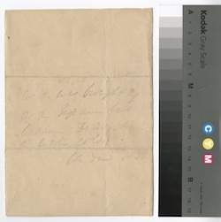
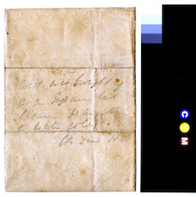
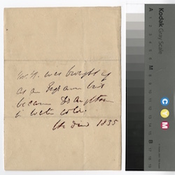
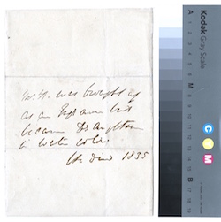
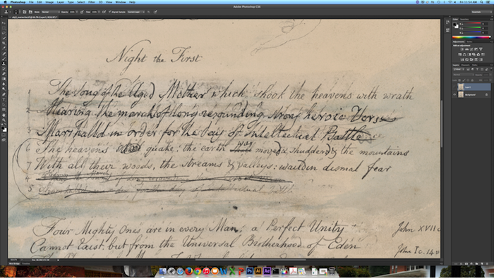
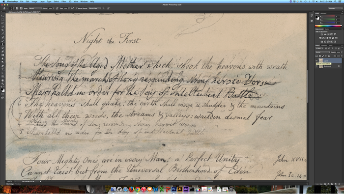

<section id="bio">
<div class="container">
    <h3>Photoshop and the Forensic Investigation of Manuscripts</h3>
    <div class="panel panel-default">
    <div class="panel-body">
        
        <p>For scholarly editors, much is made out of minutiae. Entire meetings might be spent peering at documents and images, debating whether a mark might be a period, comma, or just a benign blob of ink.</p>
            
        <p>What if we could get a better look? The combination of the Blake Archive's cache of high quality TIFF files with readily available digital photo editing software (like Photoshop) creates an intriguing environment of play and potential. Certainly, immediate access to the physical documents and the use of techincal photography, like multispectral imaging, would offer more robust and reliable results. But some simple Photoshop manipulation could help--quickly and cheaply--clarify vague passages or allow editors to model conjectural readings.</p>
        
        <p>These were the ideas behind a series of experiments using Blake Archive materials in Photoshop. Below are some links to blog posts that I wrote to document the process, as well as the sample images seen above and below. Additionally, I compiled and presented these materials with some other Blake Arhive work at MLA 2016 in Austin, and those slides are also included below.</p>
        
        <ul>
            <li>Blog Post: <a href="https://blakearchive.wordpress.com/2015/04/30/blake-in-photoshop-part-1-of/">Blake in Photoshop, Part 1 of...</a></li>
            <li>Blog Post: <a href="https://blakearchive.wordpress.com/2015/10/07/blake-photoshop-faded-text/">Blake in Photoshop, Part 2: Recovering Faded Text</a></li>
            <li>Blog Post: <a href="https://blakearchive.wordpress.com/2015/10/29/blake-photoshop-2-5/">Blake in Photoshop, Part 2.5: Can You Read This?</a></li>
            <li>Blog Post: <a href="https://blakearchive.wordpress.com/2015/11/12/blake-in-photoshop-part-3-recovering-overwritten-text/">Blake in Photoshop, Part 3: Recovering Overwritten Text</a></li>
            <li><a href="https://drive.google.com/open?id=0B9QgLs97DZS5U0ZSR0tyS2tibDQ">MLA Slides</a></li>
        </ul>
        
        <hr/>
        
        <h5>Recovering Faded Text Using Layer Masks and Levels Adjustment Tool</h5>

        <blockquote>
            <p><a href="static/img/photoshop1_full.jpg"></a><a href="static/img/photoshop2_full.jpg"></a></p>
            <p><a href="static/img/photoshop4_full.jpg"></a><a href="static/img/photoshop5_full.jpg"></a></p>
        </blockquote>
        
        <hr/>
        
        <h5>Recovering Overwritten Text Using Clone Stamp and Healing Brush Tools</h5>

        <blockquote>
            <p><a href="static/img/photoshopover3_full.png"></a></p>
            <p><a href="static/img/photoshopover4_full.png"></a></p>
        </blockquote>
        
    </div>    
    </div>    
</div>    
</section>

